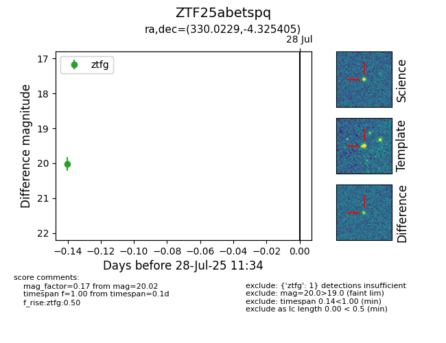

Target ZTF25abetspq at 2025-07-28 11:34, see:
FINK: fink-portal.org/ZTF25abetspq
Lasair: lasair-ztf.lsst.ac.uk/objects/ZTF25abetspq
ALeRCE: alerce.online/object/ZTF25abetspq
alt names
ZTF25abetspq (ztf,fink)
coordinates:
equatorial (ra, dec) = (330.0229,-4.32540)
galactic (l, b) = (54.3759,-43.24791)
photometry
last ztfg=20.02
1 ztfg detections
